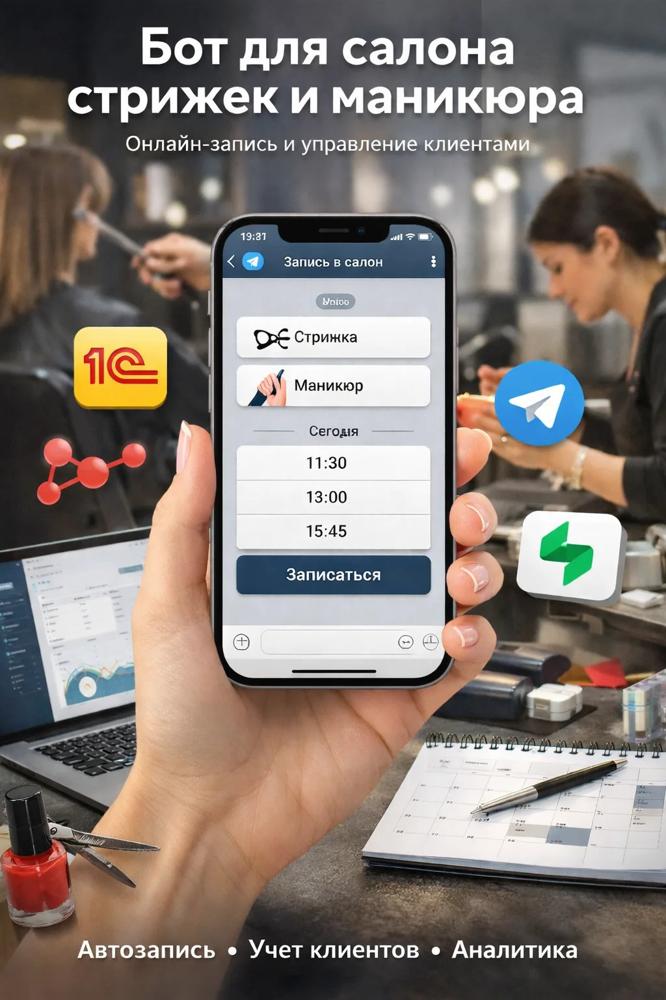

Боты и AI-помощники
Разговорные боты, которые реально стоят в бою: продают, квалифицируют лиды, ведут найм, записывают клиентов, консультируют и даже молятся вместе с людьми. Telegram, VK, MAX, WhatsApp, HH.ru, Avito — на n8n, LLM и своих базах знаний.

Нейросотрудник HR — AI-скрининг откликов
AI-рекрутёр сам ведёт переписку с кандидатами на HeadHunter: задаёт вопросы по чек-листу профессии, разбирает свободные ответы, отсеивает неподходящих и передаёт готовых рекрутёру с досье. Обработал 8000+ откликов и сэкономил HR-отделу 1166 часов — как год работы отдельного сотрудника, без зарплаты и выходных.
- У HH нет вебхука на новое сообщение — переписка опрашивается поллингом с нарастающими интервалами.
- LLM-агент ведёт живой диалог: дозадаёт только незакрытые вопросы, ловит раздражение и отказы.

Ленремонт — AI-продажник в 10 каналах
Боевой ИИ-консультант по ремонту мебели: ведёт клиента до лида и передаёт менеджерам одновременно в Telegram, VK, MAX, WhatsApp, Avito и на сайте. Держит поток 10 000+ диалогов в сутки со стабильностью 99.8%, считает стоимость по прайсу, записывает на замер и не теряет ни одной заявки — даже голос и фото понимает.
- Гейт владения диалогом и 3 заглушки по каналу — бот никогда не задевает поток живого оператора.
- Отказоустойчивость: ретраи, error-workflow возвращает диалог людям при сбое LLM, watchdog против OOM.

Салон красоты — онлайн-запись с интеграцией 1С
Telegram-бот записи, который в реальном времени синхронизируется с 1С. Клиент сам выбирает мастера, услугу и время 24/7; расписание и финансовые документы обновляются в 1С автоматически, напоминания и предоплата — прямо в боте. Работа администратора сократилась на 60%, ошибки и дубли в расписании ушли в ноль.
- Двусторонняя синхронизация с 1С на лету — не выгрузка раз в день, а обновление расписания и документов сразу.
- Защита от дублей и коллизий слотов при параллельных записях.
«День с молитвой» — Вырицкий молитвослов в Telegram и ВКонтакте
Бот ежедневной молитвенной практики: раздаёт тексты, аудио и фото по личному расписанию каждого пользователя, с учётом церковного календаря (Пасха, Троица), «вопрос батюшке», подача записок и пожертвования. Две зеркальные ветки — Telegram и VK.

Контроль платежей — напоминания о дебиторке
Система авто-напоминаний о долгах в Telegram и WhatsApp с оплатой в один клик прямо из уведомления. Отслеживает неоплаченные счета и дедлайны, эскалирует просрочку, показывает дашборд задолженности в реальном времени. Просроченная дебиторка снизилась на 45%, ручной обзвон должников исчез.
- Мультиканальные напоминания с гибкими сценариями по сегментам (новые/постоянные).
- Оплата прямо из уведомления + дашборд и отчётность по дебиторке в реальном времени.
Ещё боты в бою
ZZOK — бот-продавец
Прогревает холодные лиды серией касаний, скорит готовность к покупке и отдаёт тёплых в CRM с историей.
Biohacker
Подписной AI-консультант по биохакингу на своей базе знаний (RAG), с оплатой подписки на автопилоте.
Личный AI-ассистент
Помощник в Telegram с голосом: ставит задачи, разбирает почту и ведёт календарь по одной фразе.
Бильярд-бот
Бронирование столов с календарём свободного времени, онлайн-оплатой и уведомлениями администратору.
Аюрпак
AI-консультант для производителя упаковки: консультирует по каталогу и квалифицирует оптового клиента.
AUDIO MinusPlus
Telegram-сервис 24/7: разделяет треки на стемы с автоматической оплатой — продажи без участия человека.
ZZOK HR
Обучение и аттестация сотрудников через бота с базой знаний (RAG): материалы, тесты, контроль.
AI-автопостинг
Берёт ссылку или RSS, сам пишет пост нужного стиля и публикует в Telegram-канал по расписанию.
SMM-бот
Контент-календарь для beauty-мастеров: подсказывает темы и ведёт публикации.